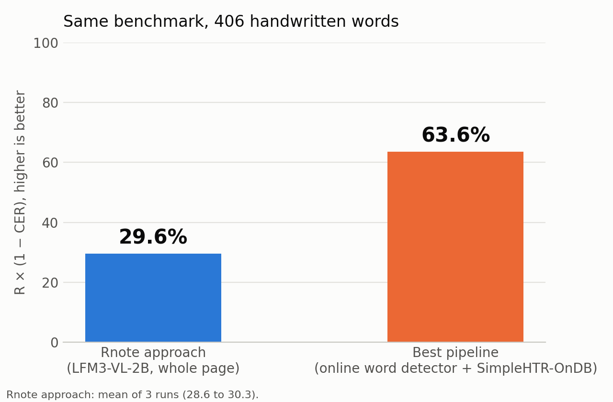

LFM3-VL-2B
Liquid AI's pretrained vision-language model LFM3-VL-2B, tried as handwriting recogniser and as a page reader (issue #171). Inspired by an experiment that makes handwritten Rnote notes searchable with this model.
Optional and experimental. It reads handwriting better than our ONNX recognisers, but it is far slower and needs an inference server, which our ONNX pipelines do not. No pipeline here is a default.
Exception to ADR 006: the weights are not our own export. The model runs in
a separate llama-server that we talk
to over HTTP, so there is no new Python dependency and no extra.
Two pipelines:
| Pipeline | What it does |
|---|---|
2026-11-09_yolo_detector_lfm3_vl |
The YOLO detector finds the words and the model reads each crop. Word-level contract as in ADR 003. |
2026-11-21_rnote_lfm3_vl |
Replica of the Rnote experiment: the whole page in one call, and the model returns the word boxes itself. |

GPU training setup
Not applicable: we have not trained or finetuned the model.
Inference
Start a llama-server (build b12233 was used), which downloads the model and
its vision projector on first use:
llama-server -hf LiquidAI/LFM3-VL-2B-GGUF:Q4_0 --port 8089 \
--reasoning off -np 1 -c 16384 -cram 0 -fa on -ctk q8_0 -ctv q8_0
--reasoning offis required: otherwise the model spends its token budget thinking and returns an empty reply.-np 1 -c 16384 -cram 0keeps the memory use low. With the defaults (4 slots and an 8 GiB prompt cache) the server grew to about 6 GB and was OOM-killed on a 15 GB machine.-fa on -ctk q8_0 -ctv q8_0is about 8% faster on word crops, with identical output on the 10 crops tried.- For
2026-11-21_rnote_lfm3_vluse-c 8192as the Rnote experiment does.
Point the code at the server, then run a pipeline:
export XOURNALPP_HTR_LLAMA_SERVER_URL=http://127.0.0.1:8089 # default: :8080
uv run python scripts/run_benchmark.py -p 2026-11-09_yolo_detector_lfm3_vl
from xournalpp_htr.inference_models import LFM3VLModel
model = LFM3VLModel.from_pretrained() # checks that the server is reachable
texts = model.recognize_batch(word_images_grayscale) # one call per crop
words = model.read_page_like_rnote(page_image_grayscale) # [(text, BoundingBox), ...]
Best model
2026-11-09_yolo_detector_lfm3_vl is the best of the LFM3-VL pipelines and has
the lowest CER of all pipelines (19.6% case-insensitive, word accuracy
66.4%), but it is not the pipeline of record. R×(1-CER) is 58.4%, below
2026-11-03_online_word_detector_hub_simple_htr_ondb (63.6%), and a benchmark
run takes about 20 minutes on CPU against under 5 minutes for all ONNX pipelines
together. See Experiments.
Experiments
All results below use the benchmark dataset latest as of 2026-11-21 (406
ground truth words, 295 matched by the YOLO detector), on CPU only (Intel
i7-8565U, 15 GB RAM). They are single runs unless noted, without significance
tests. The older tables in other model pages were measured on a smaller version
of the dataset (169 words) and are not comparable.
2026-11-21 — Replica of the Rnote approach
- Hypothesis: the page-reading approach of the Rnote experiment, run on our benchmark, finds and reads our words as well as our pipelines do.
- Setup:
2026-11-21_rnote_lfm3_vl, code revision28bff74. ReplicatesMichaelEssich/rnote, branchfeature/ocr, commit9f55d2c(crates/rnote-engine/src/ocr.rs, GPL-3.0): the whole page in one call, its prompt and grammar verbatim, its sampling (temperature 0.1, top_k 50, top_p 1, min_p 0, repeat penalty 1.1), 8192 new tokens, page rendered with its longest edge at about 2048 px, and its box handling (swap reversed coordinates, clamp, drop boxes under 1 px). Nothing of ours on top. Differences that remain: our renderer, black strokes on white (the fork renders the note through its own engine),llama-serverinstead ofllama-cli, and our scoring (a prediction must cover 80% of the ground truth box, which is strict for a search feature). - Command:
uv run python scripts/run_benchmark.py -p 2026-11-21_rnote_lfm3_vl, three times, server as above with-c 8192. - Results:
| Run | Precision | Recall | CER (case-insens.) | R×(1-CER) | Word Acc |
|---|---|---|---|---|---|
| 1 | 36.7% | 38.7% | 22.4% | 30.0% | 73.9% (116/157) |
| 2 | 37.2% | 38.4% | 21.2% | 30.3% | 71.2% (111/156) |
| 3 | 39.7% | 36.2% | 21.0% | 28.6% | 74.8% (110/147) |
| Mean | 37.9% | 37.8% | 21.5% | 29.6% | 73.3% |
No page failed (no reply was cut off by the context limit). A run took 30 to 35 minutes. - Best model: not applicable; see the comparison below. - Conclusion: the model reads the words it finds well (73% word accuracy on matched words) but finds only about 38% of them with a box that covers the word. It works as a rough locator, which is what search needs, but not for our word-level contract. Raw outputs: the three run logs and HTML reports.
2026-11-21 — Comparison with the existing pipelines
The existing pipelines, rerun on the same dataset, and the LFM3-VL ones, sorted by R×(1-CER). Only ONNX pipelines need no server.
| Pipeline | Precision | Recall | CER (case-insens.) | R×(1-CER) | Word Acc |
|---|---|---|---|---|---|
2026-11-03_online_word_detector_hub_simple_htr_ondb |
84.1% | 87.4% | 27.3% | 63.6% | 53.8% |
2026-11-09_yolo_detector_lfm3_vl |
77.0% | 72.7% | 19.6% | 58.4% | 66.4% |
2026-10-09_yolo_detector_ppocrv5 |
77.0% | 72.7% | 23.4% | 55.7% | 51.2% |
2026-10-17_yolo_detector_simple_htr_ondb_beam_vocab |
77.0% | 72.7% | 24.6% | 54.8% | 60.3% |
2026-10-05_yolo_detector_beam_vocab |
77.0% | 72.7% | 25.8% | 53.9% | 54.9% |
2026-10-17_yolo_detector_simple_htr_ondb |
77.0% | 72.7% | 26.9% | 53.1% | 53.6% |
2026-09-02_yolo_detector |
77.0% | 72.7% | 27.8% | 52.5% | 48.5% |
2024-07-18_htr_pipeline |
82.3% | 73.2% | 31.0% | 50.5% | 49.5% |
2026-06-07_htr_pipeline_native |
83.0% | 73.2% | 33.3% | 48.8% | 48.8% |
2026-10-09_ppocrv5_det_rec |
77.3% | 51.2% | 20.7% | 40.6% | 57.2% |
2026-09-17_rf_detr_detector |
79.9% | 56.9% | 30.2% | 39.7% | 48.5% |
2026-11-21_rnote_lfm3_vl (mean of 3) |
37.9% | 37.8% | 21.5% | 29.6% | 73.3% |
The TrOCR pipelines were not rerun (see Current status).
- Conclusion:
- With the same YOLO detector (precision 77.0%, recall 72.7%), LFM3-VL is the best recogniser: CER 19.6% against 23.4% to 27.8% for the others, and word accuracy 66.4% against 60.3% for the next best.
- The best pipeline overall wins on detection, not recognition: the online word detector reaches recall 87.4% with a weaker recogniser.
- Online word detector plus LFM3-VL would combine the best detector with the best recogniser, but was not tried: it would send more crops to a model that needs about 3 s per crop.
2026-11-21 — Server flags and where the time goes
- Hypothesis: the speed flags of the Rnote experiment (flash attention, q8_0 KV cache, more threads) speed up the word crop pipeline.
- Setup: 10 YOLO crops of one example page, mean time per crop after a warm-up call.
- Results:
| Server flags | Time per crop |
|---|---|
-np 1 -c 16384 -cram 0 |
3.53 s |
the same plus -fa on -ctk q8_0 -ctv q8_0 |
3.25 s |
the same plus -t 8 -tb 8 |
4.07 s |
Outputs were identical in all three. About 95% of a crop's time is prompt evaluation including the vision encoder (about 3 s); decoding a word takes 0.1 to 0.15 s. - Conclusion: the flags help decoding, not the encoder, so the gain on crops is small (about 8%). Eight threads are slower than the default of four on this 4-core CPU with hyperthreading. The flags should matter more for page reading, which writes hundreds of tokens per call; not measured.
2026-11-10 — Page reading variants (dropped)
- Hypothesis: the model can return the word boxes of a page itself, and we can make them good enough to replace the YOLO detector.
- Setup: four variants of one pipeline, all with the model returning
{text, box}entries under a JSON grammar. Whole page: the page as one 150 DPI image. Strips: horizontal strips with overlap, one call each; a strip keeps only the words centred in the band it owns, strips without ink are skipped, duplicate boxes within a strip are dropped. The prompt also asked to skip arrows and to box a formula as one entry, and?-only entries were dropped. Snapped: each box replaced by the bounds of the pen strokes it holds, as the ground truth boxes are stroke bounds. Code revisions8a228e6,fc07af2andf1a76b1, removed in199bd93; the pipelines were2026-11-09_lfm3_vl_pageand2026-11-10_lfm3_vl_page_snapped. - Results:
| Variant | Precision | Recall | CER (case-insens.) | R×(1-CER) | Word Acc |
|---|---|---|---|---|---|
| Whole page | 33.8% | 34.7% | 25.0% | 26.1% | 71.6% |
| Strips 600/200 px | 45.0% | 44.8% | 19.8% | 36.0% | 79.1% |
| Strips 400/150 px | 32.0% | 35.0% | 30.8% | 24.2% | 70.4% |
| Strips 600/200 px, snapped | 53.4% | 51.7% | 21.3% | 40.7% | 75.2% |
| Strips 400/150 px, snapped | 42.8% | 46.8% | 27.8% | 33.8% | 68.4% |
Runs took 20 to 35 minutes. The whole page and strips 600/200 rows come from one run each, before the server was changed to the lean flags; the others from the lean server. - Conclusion: - Overlaid on a page, most predicted boxes sit on the right words. The misses are merged, offset and extra boxes, mostly around arrows and formulas. - Strips and snapping each help, 400 px strips are worse than 600 px, and the best variant (recall 51.7%) is still far behind the YOLO detector (72.7%) and slow. Dropped; the code is in the git history.
2026-11-09 — YOLO detector with LFM3-VL crops
- Hypothesis: LFM3-VL reads word crops better than SimpleHTR, TrOCR and PP-OCRv5.
- Setup:
2026-11-09_yolo_detector_lfm3_vl, code revisiond5b69f9. The YOLO detector of2026-09-02_yolo_detector; one call per crop with the prompt "Transcribe the handwritten word in this image. Reply with the word only." - Command:
uv run python scripts/run_benchmark.py -p 2026-11-09_yolo_detector_lfm3_vl - Results: precision 77.0%, recall 72.7%, CER 22.2% (case-sensitive) and 19.6% (case-insensitive), R×(1-CER) 58.4%, word accuracy 66.4% (196/295). About 20 minutes.
- Best model: this pipeline, among the LFM3-VL ones; see the comparison above.
- Conclusion: best recogniser, but a benchmark run takes about 20 minutes against under a minute for each ONNX pipeline, and it needs a server. Optional only.
Current status
LFM3VLModelimplemented withrecognize,recognize_batchandread_page_like_rnote; both pipelines are wired intocompute_predictions.- Needs a running
llama-server;from_pretrained()raises aConnectionErrorwith the command to start one if none is reachable. - Benchmarked; see Experiments. Single runs apart from the replica, so small differences are within noise.
- The TrOCR pipelines were not rerun on this dataset (
transformersis not installed here and the weights are large), so the comparison is missing them. - The replica's prompt and grammar are copied from the GPL-3.0 Rnote fork, credited in the code.
Outlook
- Use the model as a teacher: pseudo-label unlabelled handwriting with it and train the ONNX recogniser on that, to get its reading quality without running it.
- Let it pre-fill transcriptions when annotating the benchmark.
- Cut the per-crop encoder cost, e.g.
--image-min-tokensor several crops in one image; not tried and may cost accuracy. - Online word detector plus LFM3-VL, if speed ever allows.
- The model is reportedly also published as ONNX; not checked.